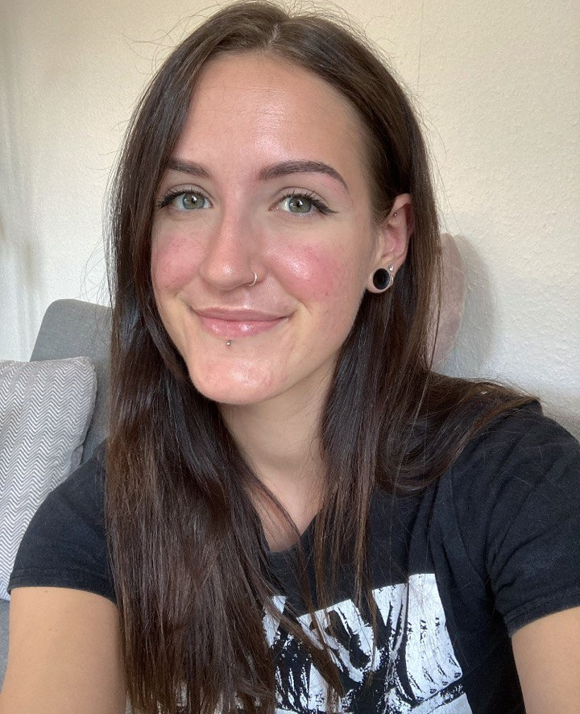

Natalie M.
25 years old | Heidelberg, Germany

Summary
Creative and dedicated trainee for media design with a focus on brand and web design. Currently also learning frontend development to specialize further.
Education
- Traineeship, Media Design (digital) - Company XYZ (2022-2025)
- Bachelor of Arts, Media Cultural Studies and Art History - University of XYZ (2018-2022)
- Technical High School (Abitur), Gestaltungs- und Medientechnik - High School of XYZ (2014-2017)
Work Experience
Languages and Skills
Languages
- German - native language ★★★★★
- English - B2 ★★★★☆
- Russian and Spanish - A2 ★★☆☆☆
EDV
- Microsoft Office: Word, Power Point and Excel
- Adobe Creative Suite: Illustrator, InDesign, Photoshop, XD, Premiere and Audition
- Web Development: HTML5 and CSS
- Alternative Software: Figma, Inkscape, Gimp and Canva
- CMS: ProcessWire and WordPress
- Project Management: Trello and Toggl
Awards and Certifications
- Participation in practical seminars on film and film post-production, cross-media journalism and multimedia production
Other
© Natalie Meier